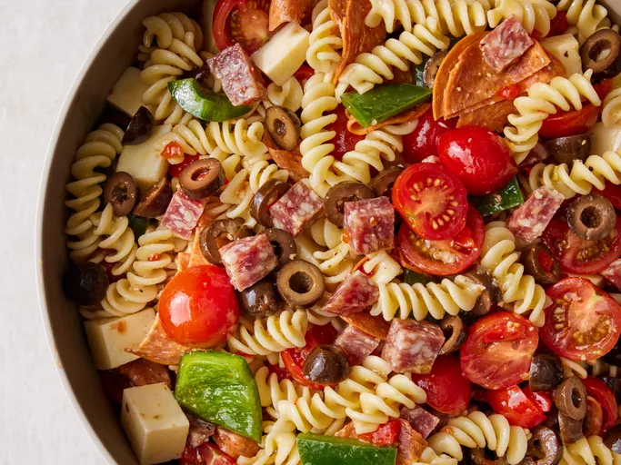

Awesome Pasta Salad
Description:
This is a classic Italian potato salad that can be found on tables from the north to the south. Meaning "parsley potatoes", you'll find Patate Prezzemolate everywhere in Italy: formal luncheons, family get-togethers, weeknight dinners, and even in school cafeterias. Buon appetito!
Ingredients
- 1 (16 ounce) package fusilli (spiral) pasta
- 3 cups cherry tomatoes, halved
- ½ pound provolone cheese, cubed
- ½ pound salami, cubed
- ¼ pound sliced pepperoni, cut in half
- 1 large green bell pepper, cut into 1 inch pieces
- 1 (10 ounce) can black olives, drained
- 1 (4 ounce) jar pimentos, drained
- 1 (8 ounce) bottle Italian salad dressing
Directions
Step 1
Gather all ingredients.
Step 2
Bring a large pot of lightly salted water to a boil. Cook fusilli pasta in the boiling water, stirring occasionally, until tender yet firm to the bite, about 12 minutes. Drain.
Step 3
Combine pasta with tomatoes, cheese, salami, pepperoni, green pepper, olives, and pimentos in a large bowl. Pour in salad dressing; toss to coat.
Step 4
Enjoy!